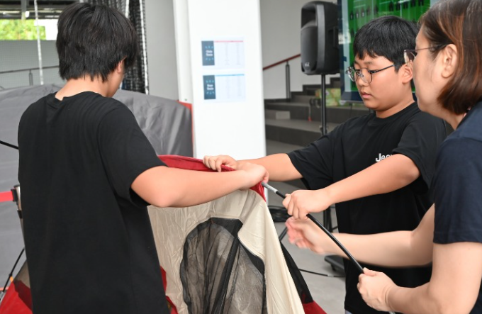
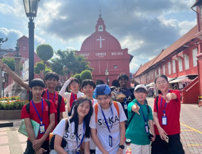
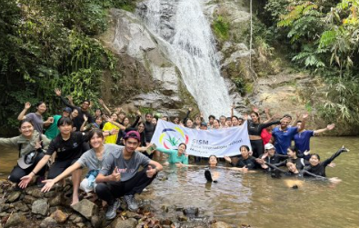
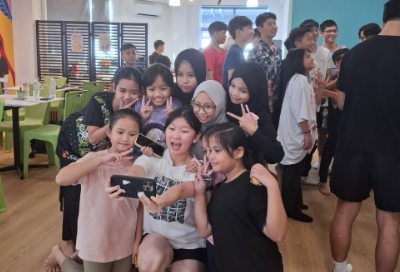

2024-2025 Y7 GCP-Programme
Agust & September

In Soka International School Malaysia
Building Friendship
2024-2025 Y8 GCP-Programme
May & April

Malacca
Exploring Cultures
2024-2025 Y9 GCP Programme
October & November

Janda Baik or Taman Negara, Malaysia
Exploring Nature
2024-2025 Y10 GCP-Programme
Throughout the year

Seremban, Malaysia
Engaging Community